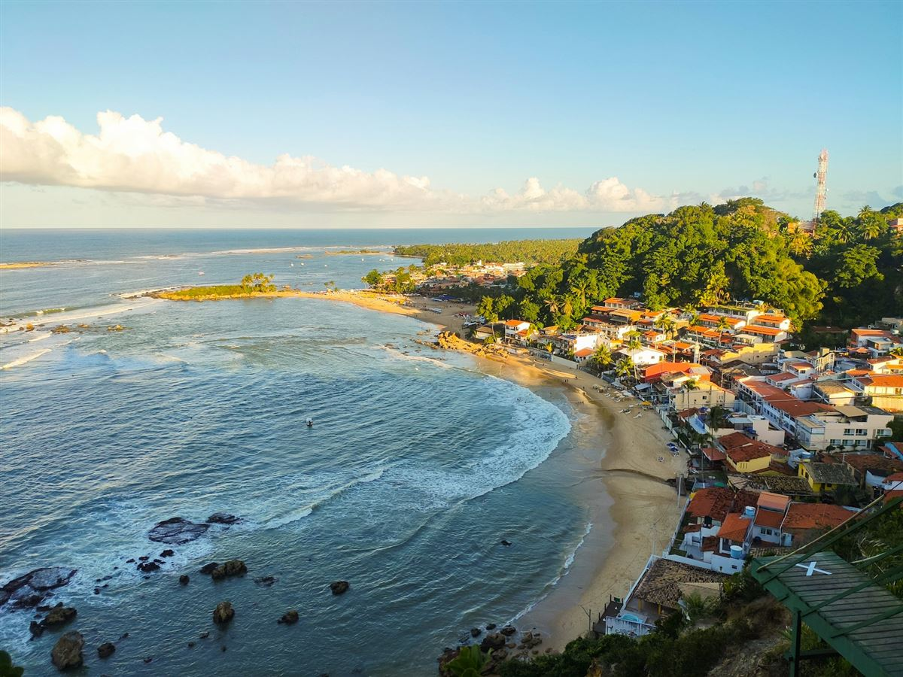
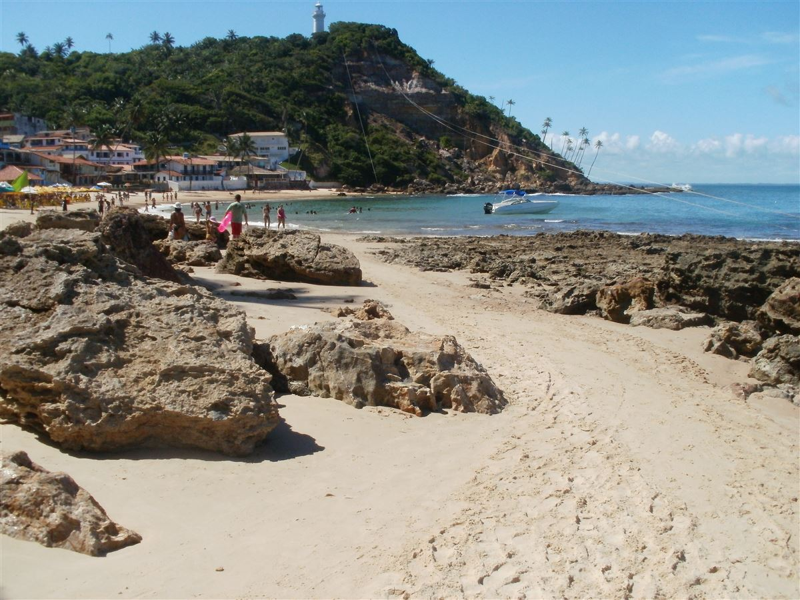
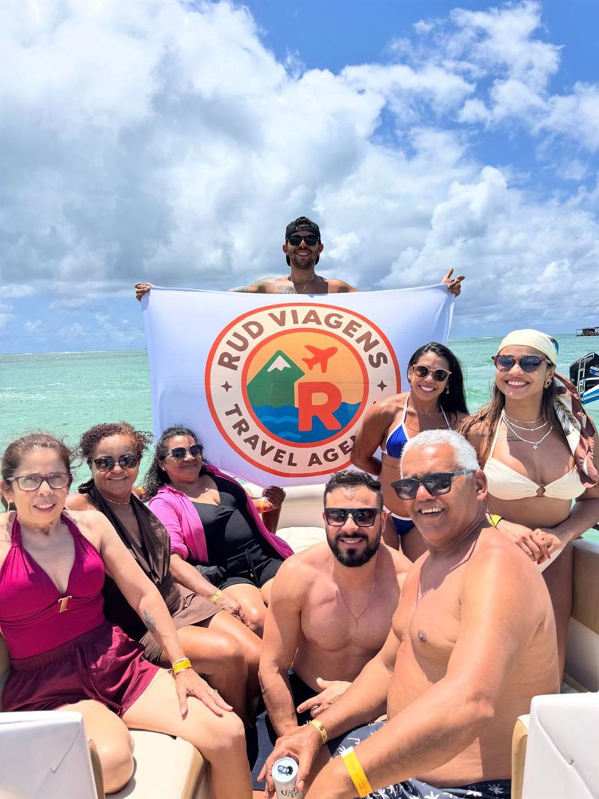

PRAIAS DA BAHIA
Morro de São Paulo
Uma ilha sem circulação de carros, com praias paradisíacas, águas cristalinas, aventura, passeios inesquecíveis e uma vida noturna cheia de opções para aproveitar a Bahia.
Conheça os roteiros →
A EXPERIÊNCIA
Praias e descobertas no seu ritmo.
Morro de São Paulo reúne diferentes praias, piscinas naturais e paisagens para aproveitar durante o dia. À noite, restaurantes, bares e a culinária local ampliam as opções para curtir a ilha.
Atividades sugeridas
Banhos de mar e piscinas naturais, passeios de barco por praias e ilhas próximas, passeios de quadriciclo em meio à natureza e tirolesa com chegada na água estão entre as possibilidades. Há opções para quem prefere contemplar as paisagens, navegar ou aproveitar a vida noturna.
O que pode estar incluído
- Planejamento dos passeios e deslocamentos
- Hospedagem conforme a proposta
- Atividades e serviços escolhidos para a viagem
- Suporte da Rud Viagens antes do embarque
O que não está incluído
- Serviços não indicados na proposta contratada
- Despesas pessoais
A duração, os valores, os passeios e as condições são definidos na proposta. A disponibilidade de cada atividade deve ser confirmada antes da reserva.
Como funciona
Conte quando pretende viajar, quantos dias tem disponíveis e quais experiências mais combinam com você. A Rud Viagens apresenta opções de roteiro, serviços e preços pelo WhatsApp.
Quando acontece
Datas e duração são combinadas de acordo com seu período de viagem e a disponibilidade dos serviços escolhidos.
Informações importantes
Antes da reserva, confirme deslocamentos, inclusões, regras de cada passeio e condições de operação. Os passeios apresentados são sugestões para seu planejamento.
Quer conhecer Morro de São Paulo?
Conheça os roteiros →FOTOS DO DESTINO
Morro de São Paulo em imagens

